1КороткоКомментировать
- Начинать стоит с админки. Перевод блюд и генерация меню экономят часы руками, нужны только внутренним сотрудникам и не требуют персональных данных клиентов. Всё, что создаёт ИИ, остаётся черновиком, пока человек его не примет.
- Языки почти бесплатные. Бэкенд уже хранит названия и описания на 4 языках (RU, KK, EN, UZ), а админка заполняет только RU и KK. Поля есть, их просто никто не заполняет.
- Генерация меню — главный эффект для кухни. Сейчас каждое блюдо на каждый день программы назначают руками. ИИ может собирать черновик на две недели за минуту, но жёсткие правила должен проверять обычный алгоритм, а не модель.
- Клиентские чаты — следующий этап. Для них нужен отдельный серверный сервис, а для продлений — данные и пуши, которых в бэкенде пока нет.
- Главный принцип: ИИ ничего не меняет сам. Он читает данные и готовит предложение, а применяет его человек кнопкой — клиент в приложении или сотрудник в админке.
2Что уже есть и чего не хватаетКомментировать
есть на что ИИ может опереться уже сейчас:
- 4 языка у блюд, программ и приёмов пищи (заполнены только RU и KK).
- Расчёт суточной нормы калорий по возрасту, росту, весу, цели и активности — тот же, что у калькулятора в приложении.
- Предпросмотры изменений заказа: заморозка, время и адрес доставки, калории, исключённые дни. Каждый возвращает точные последствия до того, как клиент нажмёт «Применить».
- Справочник исключений питания: аллергии, ограничения по здоровью, нелюбимые продукты.
- Каталог программ и меню программы на любую дату.
нет чего не хватает:
- Состава и аллергенов у блюд. Исключения хранятся в заказе, их учитывает кухня. Поэтому ИИ не может честно сказать «в этом меню нет орехов»; правильно — «отметьте орехи при оформлении, кухня исключит».
- Граммовок порций. КБЖУ указаны на 100 г, поэтому генератор меню не может держать калорийность дня под тариф 1 800 ккал — только баланс белков, жиров и углеводов.
- Списка заканчивающихся заказов. Раздел «Клиенты на продление» в админке сейчас пустой именно поэтому.
- Отправки пушей с бэкенда. Приложение к пушам готово, но рассылки с сервера нет.
- Времени отметки доставки курьером в данных, которые видит клиент: есть только дата и статус.
3Админка
Пять экранов: два про контент и меню, три — админская сторона клиентских чатов.
3.1 Переводы и контентКомментировать
Перевод с русского на казахский, английский и узбекский — по кнопке в редакторе блюда или массово по всему справочнику. Перевод соблюдает словарь кухни: «Люля» и «Сырники» не переводятся, «Плов» становится «Палау». Результат ИИ всегда черновик в пунктирной рамке: клиенты не видят его, пока человек не нажал «Принять».
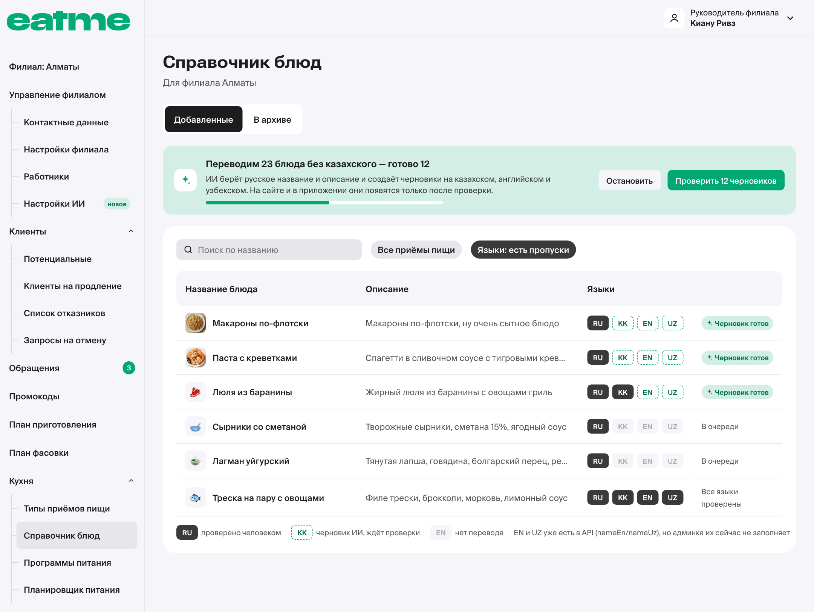
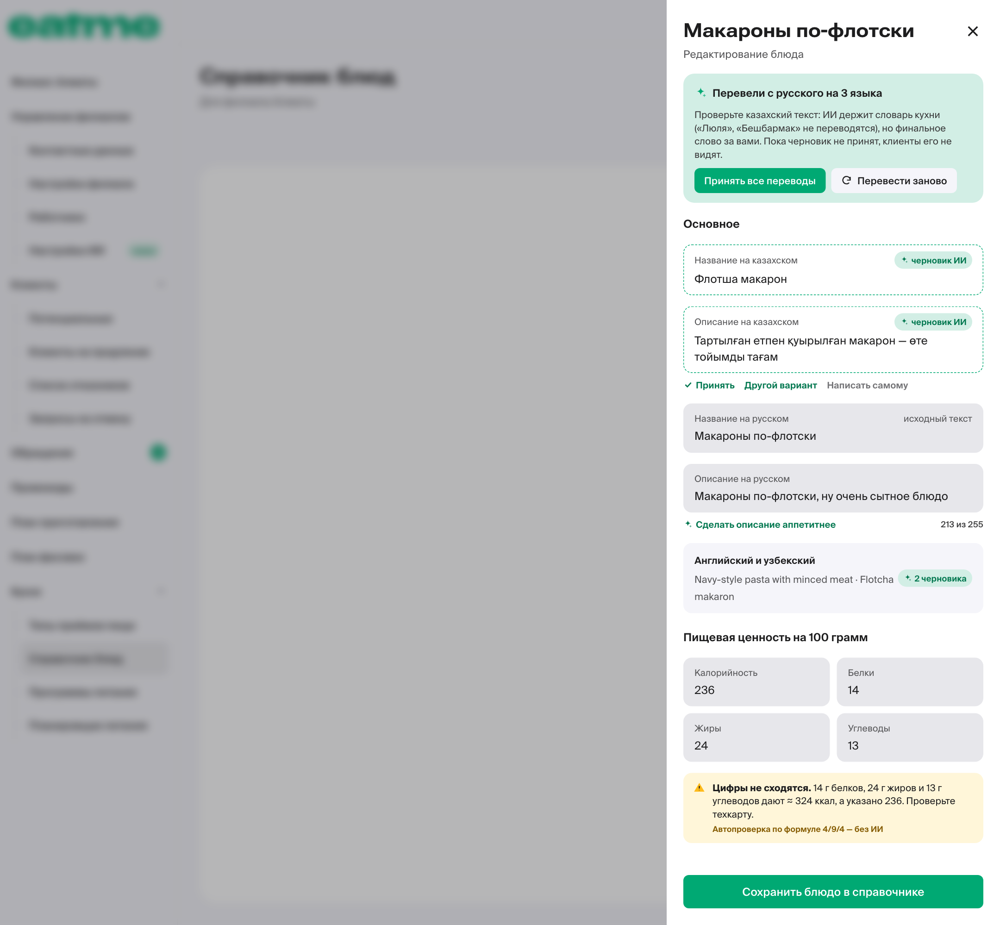
Чего не делать: генерировать фото блюд. Клиент покупает то, что видит на фото, а сгенерированная картинка — не это блюдо.
3.2 Генерация менюКомментировать
Оператор выбирает период, включает правила и пишет пожелания своими словами. ИИ собирает черновик сетки «дни × приёмы пищи». У каждого блюда видна причина выбора, проблемные места подсвечены, а уже назначенные вручную блюда не трогаются.
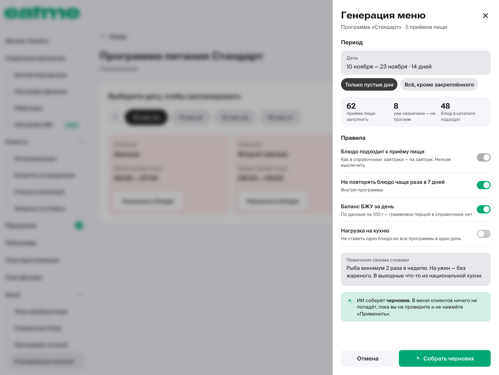
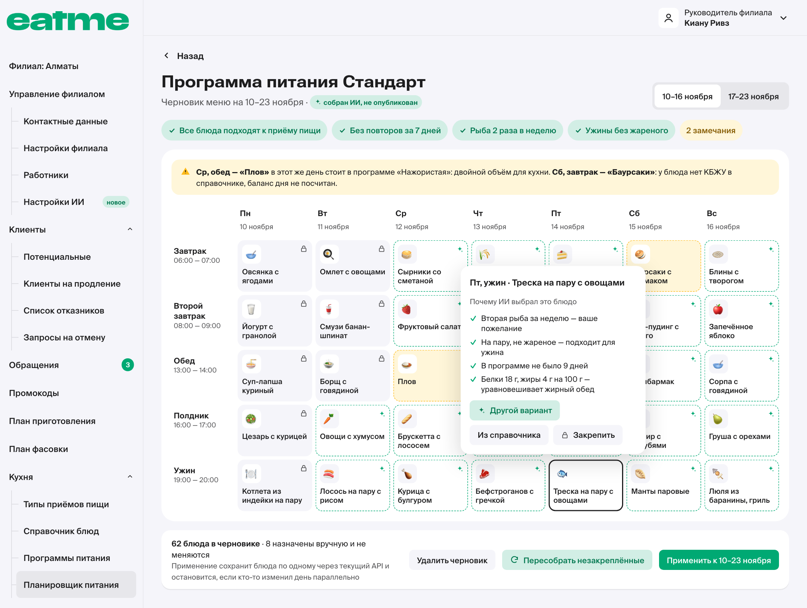
- Строгие правила — алгоритмом, мягкие — моделью. «Блюдо подходит к приёму пищи», «без повторов 7 дней», «только будущие даты» гарантирует обычный код. Модели остаются пожелания вроде «рыба 2 раза в неделю» и объяснения.
- Первая версия может обойтись без ИИ: заполнение по ротации и «скопировать прошлую неделю».
- Применение безопасно: если кто-то параллельно поменял день, сохранение остановится, а не перезапишет чужую правку.
- Чего не хватает в данных: тегов блюд (рыба, жареное, птица) — без них модель угадывает по названию.
3.3 ОбращенияКомментировать
Новый раздел, куда ИИ-поддержка передаёт сложные случаи. Оператор получает не голую переписку, а суть: что случилось, чего хочет клиент, что ИИ уже сделал и почему передал. Ответ ИИ предлагает черновиком — оператор правит его и отправляет сам.
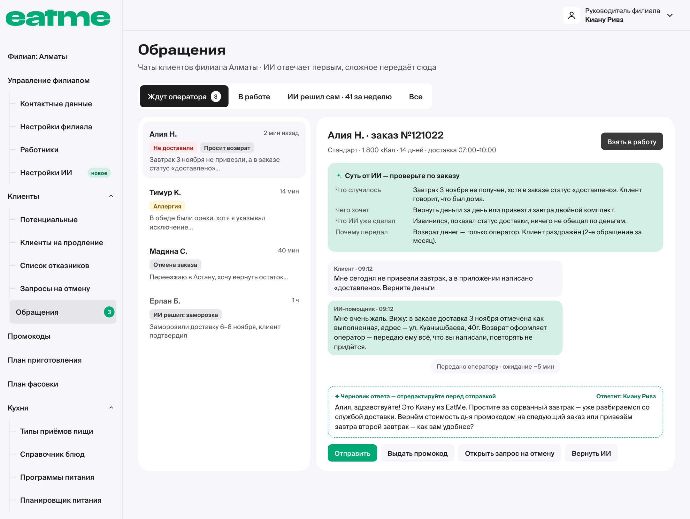
3.4 Клиенты на продлениеКомментировать
Для каждого клиента с заканчивающейся программой видно, что сделал ИИ: написал, клиент продлил, возразил «дорого» и передан менеджеру, отписался. Контрольная группа не получает сообщений — только так можно честно измерить, сколько продлений дал ИИ.
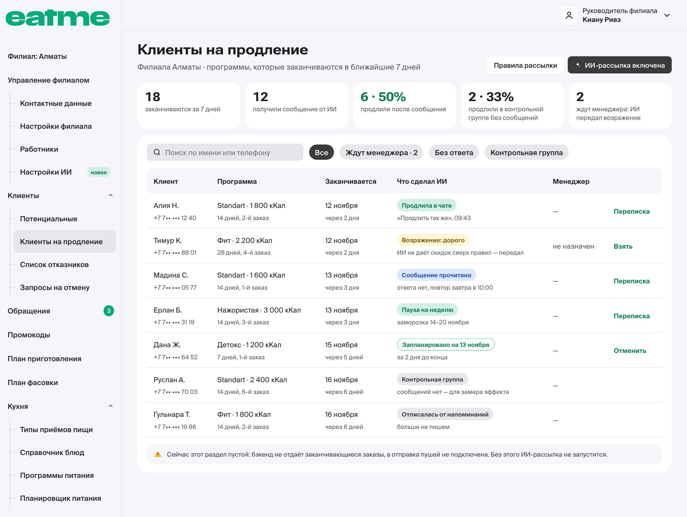
3.5 Настройки ИИКомментировать
Одно место для всех правил: словарь кухни, ограничения рассылки, что ИИ решает сам и что сразу уходит оператору, лимит расходов, какие данные никогда не уходят в модель.
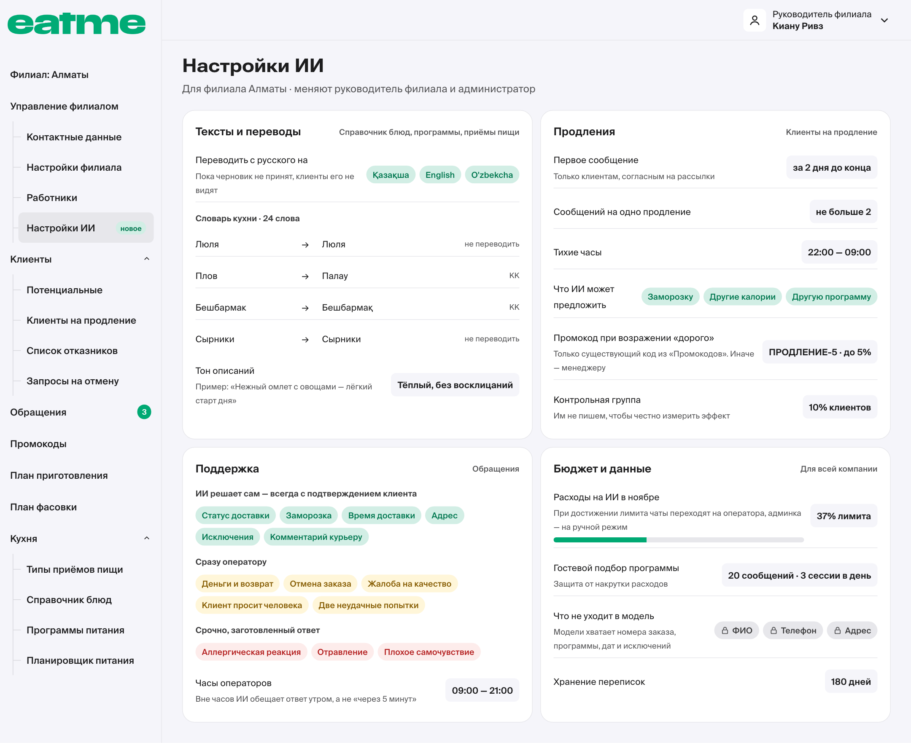
4Мобильное приложение
4.1 ИИ-подбор программыКомментировать
ИИ задаёт те же вопросы, что калькулятор, но словами. Калории считает существующий расчёт, а не модель. В ответ приходит настоящая программа из каталога с причинами выбора, а «Оформить» ведёт в текущее оформление заказа с выбранной калорийностью и исключениями.
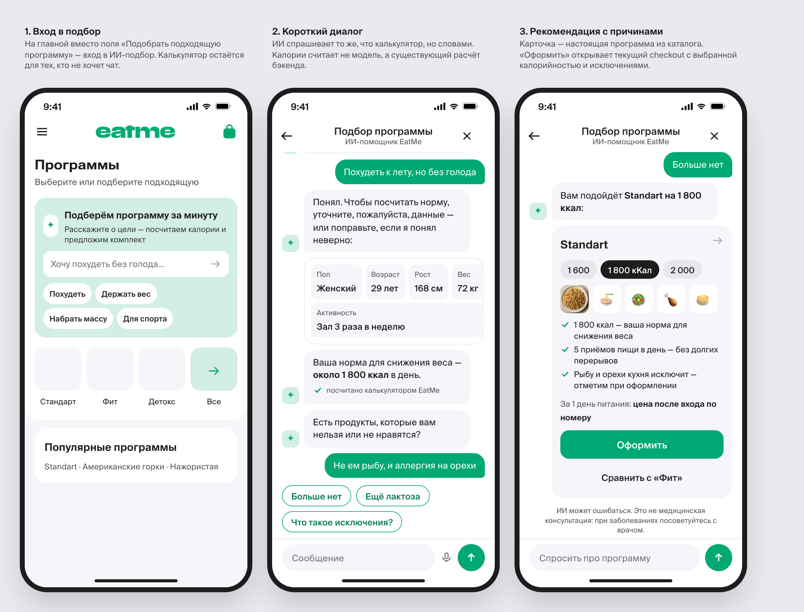
- Гостям цена не показывается, как и сейчас.
- Это не медицинская консультация; при ограничениях по здоровью — совет обратиться к врачу.
- ИИ не обещает отсутствие аллергенов в меню (см. раздел 2).
4.2 ПродлениеКомментировать
Пуш за 2 дня до конца программы, продление в одно касание с теми же настройками. Если клиент возражает, ИИ предлагает то, что уже есть в продукте: новые блюда из меню на следующие недели, другую программу на те же калории, паузу.
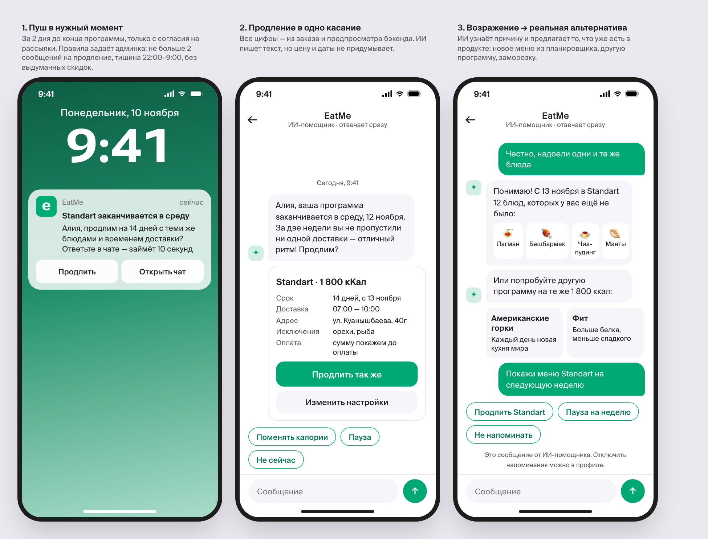
- Только клиентам, согласным на рассылки; не больше 2 сообщений на одно продление; тишина с 22:00 до 9:00.
- «Не напоминать» срабатывает сразу.
- Скидки — только настоящие промокоды в лимитах, которые задал менеджер. Цены и даты ИИ не придумывает.
4.3 ПоддержкаКомментировать
Простые действия ИИ выполняет сам, но только через карточку с последствиями и кнопку клиента. Деньги и жалобы уходят оператору. Аллергия и самочувствие обрабатываются без импровизации: заранее написанный ответ, номер 103 и срочный оператор.
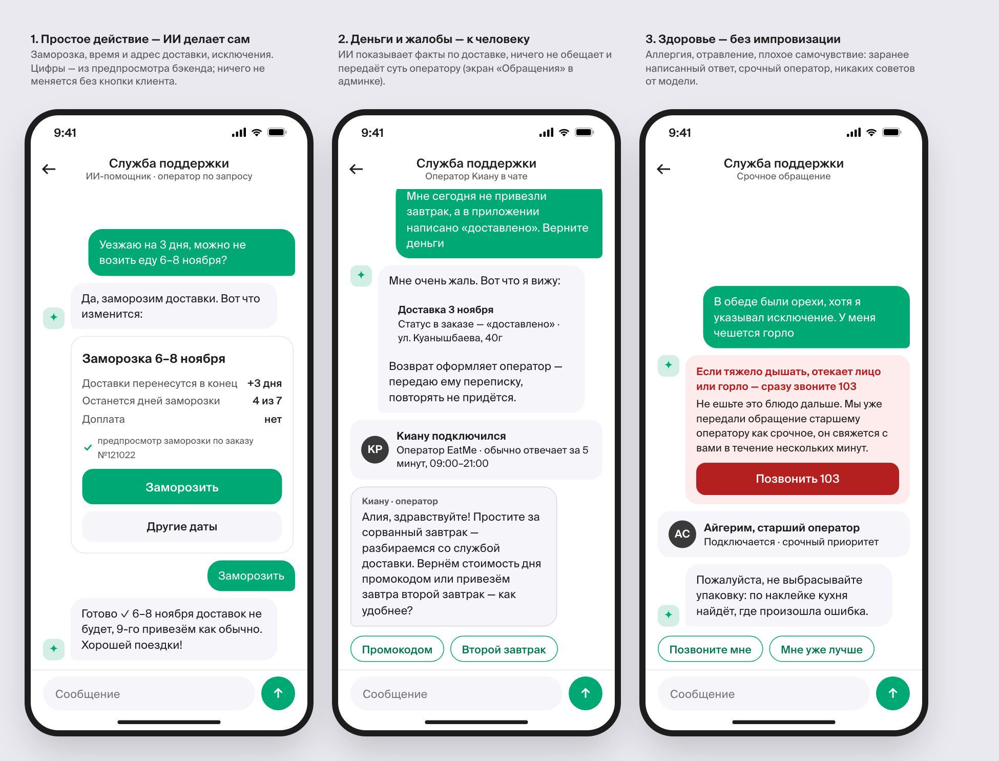
Чат встаёт в будущий экран «Служба поддержки» в профиле — тот, где будут номер филиала и мессенджеры.
5Как это устроеноКомментировать
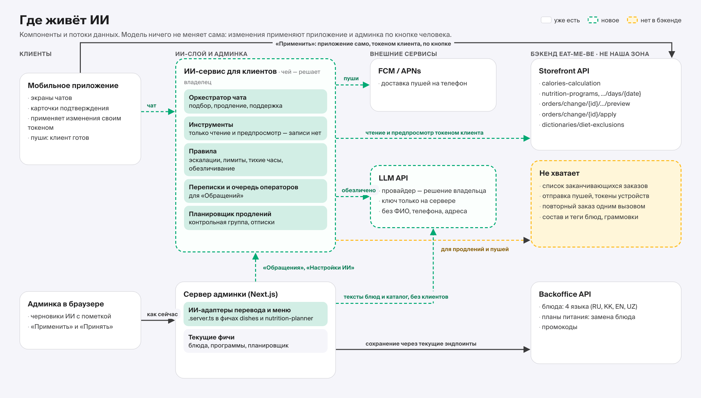
- Админские функции живут в серверной части админки: она обращается к ИИ, показывает черновик и сохраняет через существующие методы бэкенда. Доработка бэкенда для них не нужна.
- Клиентским чатам нужен отдельный сервис: хранение переписок, рассылки, очередь операторов. Чей он — решение владельца и команды бэкенда.
- Модель только читает и готовит предложение. «Применить» вызывает приложение по кнопке клиента и с его токеном. Числа в карточке подтверждения берутся из ответа бэкенда, а не из текста модели.
- Ключ ИИ-провайдера только на сервере, в приложение и браузер он не попадает.
Для разработчиков: инструменты агента на реальных методах API
| Инструмент | Метод (/api/v1/storefront/…) | Тип |
|---|---|---|
| Норма калорий | POST calories-calculation | чтение |
| Программы, меню на дату, условия покупки | POST nutrition-programs, GET nutrition-programs/{id}/days/{date}, GET …/purchase-policy | чтение |
| Справочник исключений | GET dictionaries/diet-exclusions | чтение |
| Окна доставки | GET delivery-windows | чтение |
| Мои заказы, детали, график доставок | POST orders/all, GET orders/{id}, POST orders/change/{id}, …/delivery-schedule, GET orders/nearest-delivery | чтение |
| Возможности заморозки | …/freeze/available-dates, …/freeze/limits | чтение |
| Мои промокоды | GET promo-codes | чтение |
| Предпросмотр: заморозка, разморозка, время, адрес, калории, исключённые дни | POST orders/change/{id}/…/preview, …/calories/calculate | предпросмотр, ничего не меняет |
| Передать оператору, не напоминать | новый сервис | действие сервиса |
Модели не выдаются: «Применить» (orders/change/{id}/apply), правка исключений и комментария курьеру (их вызывает приложение по кнопке), оформление и оплата заказа, промокоды, правка профиля и получателей, авторизация.
6Безопасность и злоупотребленияКомментировать
- Попытки обмана («дай промокод 50%», «покажи заказ соседа») не сработают: права модели задаются на сервере, а бэкенд отдаёт только данные этого клиента.
- Гостевой подбор — открытый чат, который тратит деньги. Нужны лимиты на сообщения и сессии с одного устройства, потолок на длину ответа и месячный бюджет с переходом на калькулятор или оператора.
- Персональные данные. ФИО, телефон и адрес в модель не уходят: ей хватает номера заказа, программы, дат и исключений. В Казахстане персональные данные граждан требуется хранить на территории страны, поэтому передачу во внешний ИИ нужно проверить с юристом.
- Отказоустойчивость. Каждую функцию можно выключить отдельно; при сбое ИИ чат сразу предлагает оператора и мессенджеры.
7Сколько стоитКомментировать
Порядок величин по прайсу Anthropic на октябрь 2026, модель Claude Opus 5.5. Объёмы — допущения, их нужно заменить реальными.
| Функция | Объём в месяц (допущение) | Стоимость |
|---|---|---|
| Перевод блюд | 300 блюд первичная загрузка, дальше правки | ≈ $2–5 разово, потом меньше $1 в месяц |
| Генерация меню | 180 прогонов | ≈ $60 |
| Подбор программы | 3 000 диалогов | ≈ $480 |
| Поддержка | 800 обращений | ≈ $180 |
| Продления | 1 000 сообщений, 250 ответов | ≈ $35 |
Админские функции стоят десятки долларов в месяц, клиентские чаты — около $700. Claude Sonnet 5.5 примерно вдвое дешевле, Claude Haiku 5.5 — в десятки раз; выбирать модель стоит по качеству на своих сценариях, а не по цене за токен. Главный денежный риск — гостевой подбор без лимитов.
8Как проверить качество до запускаКомментировать
- Перевод: 100 блюд, проверенных носителем казахского. Метрики — доля принятых без правок и соблюдение словаря.
- Меню: автоматическая проверка жёстких правил (должна проходить всегда) и оценка шефом четырёх недель черновиков. Метрика — сколько ячеек меняют перед «Применить».
- Чаты: 60–100 сценариев: обычные пути, возражения, деньги, аллергия, попытки обмана, вопросы гостя о цене, обращения ночью, клиенты, пишущие по-казахски. Условие запуска — ноль ошибок в сценариях безопасности.
- Пилот: один филиал. Сначала админские функции, затем чат для сотрудников, затем реальные клиенты с контрольной группой.
9Что нужно от бэкендаКомментировать
- Состав или теги блюд с привязкой к справочнику исключений; граммовки по калорийности тарифа.
- Список заканчивающихся заказов и согласие клиента на рассылки.
- Регистрация устройств и отправка пушей.
- «Повторить заказ» одним вызовом — без этого продление в одно касание остаётся полным оформлением.
- Пакетное назначение блюд в план (желательно, не обязательно).
- Хранение переписок и очередь операторов, если ИИ-сервис будет жить в бэкенде.
- Время отметки доставки курьером для клиента, если поддержка должна его называть.
10Порядок внедренияКомментировать
- Без ИИ, за несколько дней: проверка КБЖУ, заполнение меню по ротации, копирование прошлой недели.
- Админка: перевод, затем генерация меню.
- Подбор программы: гостевой сценарий, минимум данных о клиенте.
- Поддержка вместе с «Обращениями» в админке.
- Продление — последним: нужны данные о продлениях, пуши и контрольная группа.
11Открытые вопросыКомментировать
- Какой ИИ-провайдер и какой бюджет? Можно ли отправлять во внешний сервис хотя бы обезличенные данные?
- Кто проверяет казахские тексты — нужен носитель языка или хватит оператора?
- Готов ли бэкенд добавить теги или состав блюд и граммовки? От этого зависят качество меню и честность ответов про аллергены.
- Где живёт сервис клиентских чатов — в бэкенде или отдельно?
- Часы работы операторов и время ответа, на которые ИИ может ссылаться.